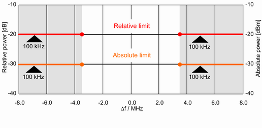

Spectrum Requirements
IEEE 802.15.4 defines the spectrum limits for the unwanted off-carrier energy. Average spectral power shall be measured using a 100 kHz resolution bandwidth. For 2450 MHz O-QPSK PHY, the reference level for relative results shall be the highest average spectral power measured within ±1 MHz of the carrier frequency.
Spectrum requirements for 2450 MHz DSSS band, O-QPSK
Frequency | Relative limit | Absolute limit |
|---|---|---|
|f – fc| > 3.5 MHz | - 20 dB | -30 dBm |
The power spectrum density requirements are shown in the figure below.

Spectrum limits for 2450 MHz DSSS band, O-QPSK